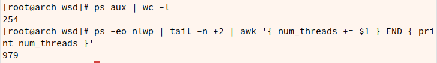
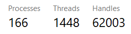

This article lists a Linux cheatsheet including lots of tools’ commands.
I. Processes and system management
Linux background execute command
If we want to proceed our work when we’re executing a Linux command that may spend a lot of time, I find two ways that may solve this paradox.
Keep this terminal and open another one.
Append a ‘&’ to the time-spending command and it will be excuted in the background.
count all processes and threads running
1 2
ps aux | wc -l # count all processes ps -eo nlwp | tail -n +2 | awk '{ num_threads += $1 } END { print num_threads }' # count all threads

For Windows, just type Ctrl+Alt+Delete to open Task Manager and choose the performance tab and see: 
User management
add user
1
adduser 用户名
add user to group
1
usermod -a -G 组名 用户名
II. Text manipulation
sed
删除 .bashrc 的最后一行：sed -i '$d' ~/.bashrc
IV. IO
mount
Linux mount command is used for mounting filesystems to directory and /etc/fstab file the default mounting config file at every booting time. Surely you can alse use sudo mount -a to remount all filesystems in /etc/fstab
USB FAT32 filesystem
It’s the easiest one:
1 2 3
sudo mkdir /mnt/usb lsblk sudo mount /dev/sdb1 /mnt/usb
lsmod | grep cifs # if not, `sudo modprobe cifs` or add `cifs` into /etc/modules-load.d/cifs.conf smbclient -L nas -U% sudo mount -t cifs //nas/wangshengdian /mnt/lab-nas-wangshengdian -o username=[your username],password=[your password],workgroup=workgroup,iocharset=utf8,uid=shane,gid=shane
noauto
Mount at boot-up
/etc/fstab
V. Network
Web Downloader
Downloading from the web has many choices on Linux.
aria2
For chrome extension, I use Camtd. Go to https://github.com/jae-jae/Camtd/releases and download the latest .crx file. Then upload it to https://crxextractor.com/ for getting the .zip file and download it. Then unzip -d dir Camtd.zip. And open chrome://extensions to load the unpacked directory.
But sometimes you don’t need a browser to download file. You can directly download from your command line. Here are they:
wget
If you want to download a file on Github, it’s easy to use wget. Let’s say
Some campus net environments have ip restrictions with a maximum number of two. In order to support the network connection for more devices(including virtual machines) as well as to surpass the firewall, additional efforts seem neccessary to deploy a personal proxy server. Here I use v2ray to acomplish this goal.
use v2ray -test -config 你的配置文件 to ensure the correctness of the configuration format.
Test and run
Step 1: Login with the campus network account on the desktop to get an external ip address and do not login on the laptop. Ensure the connection availability from your laptop to the desktop, and from the desktop to VPS server. Step 2: start v2ray
1
sudo v2ray --config=你的配置文件
or run in the backgroud
1
sudo systemctl start v2ray # or sudo service start v2ray
Comments
shortnamefor Disqus. Please set it in_config.yml.